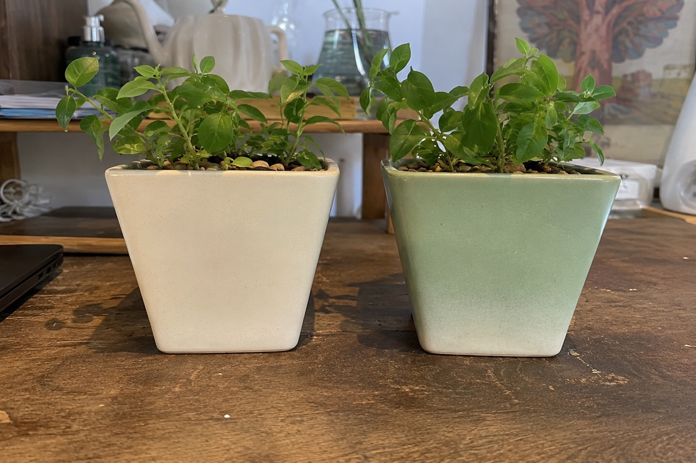
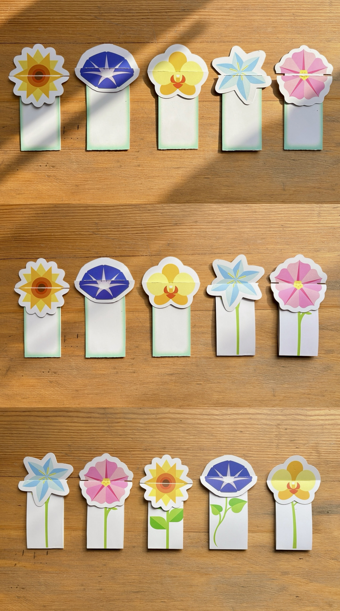
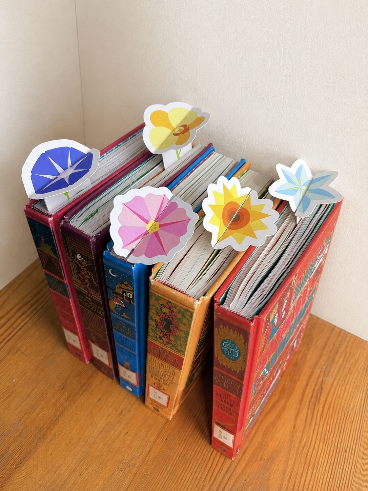
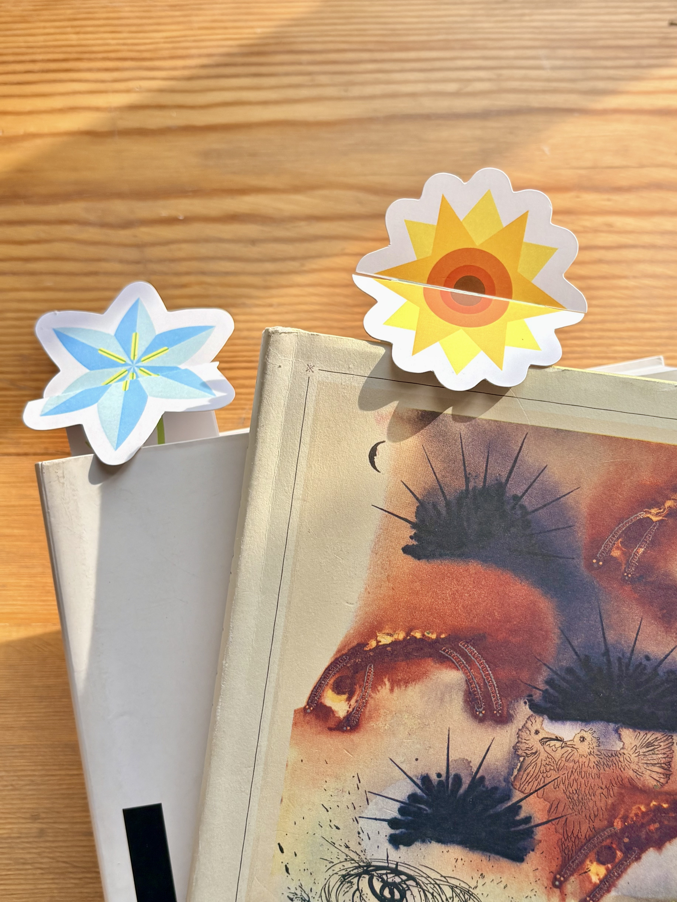
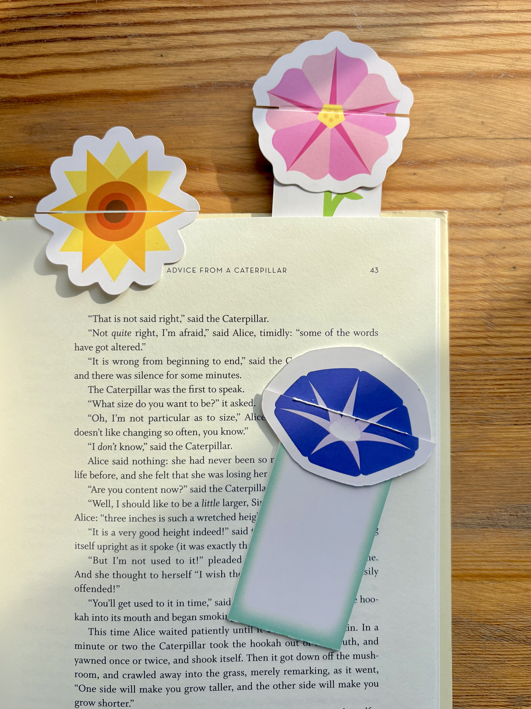
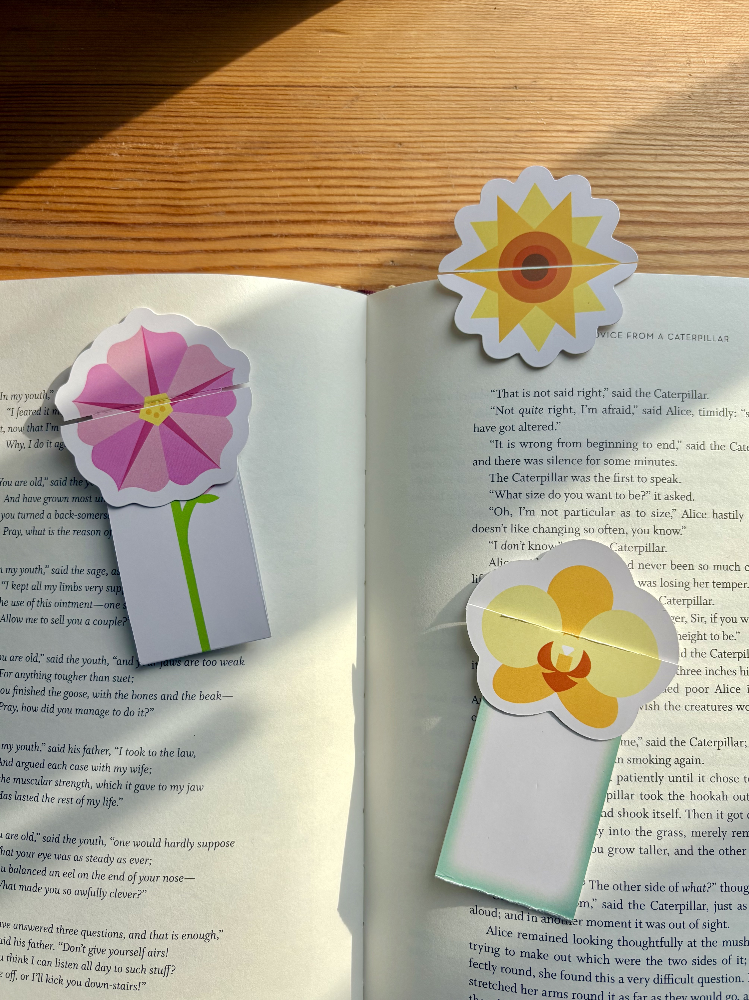

Hydrochromic Interactive Planter

Background
This project explores material-driven interaction design. By combining traditional ceramic craftsmanship with modern smart materials, it aims to create a more organic and poetic relationship between nature, humans, and everyday objects.
Problem
Traditional electronic soil moisture sensors often feel intrusive and disrupt the natural aesthetic of indoor plants. Users lack an intuitive, visual, and screen-free way to understand the hydration needs of their plants.
Approach
I designed a ceramic planter treated with a specialized hydrochromic coating. When watered, the moisture level is dynamically visualized through a color-changing pattern on the planter's surface, turning a functional requirement into a living, breathing aesthetic display.

Prototype

Product Demo





Bookmark